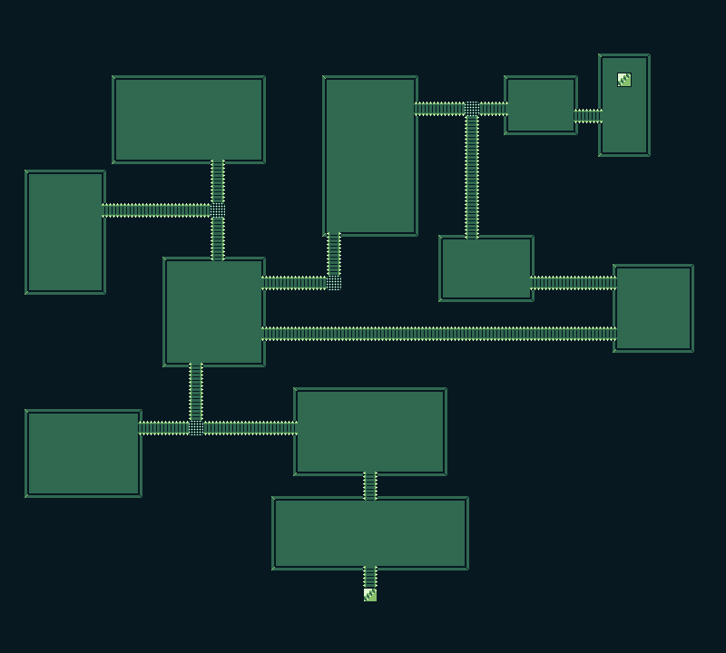
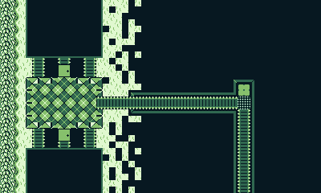
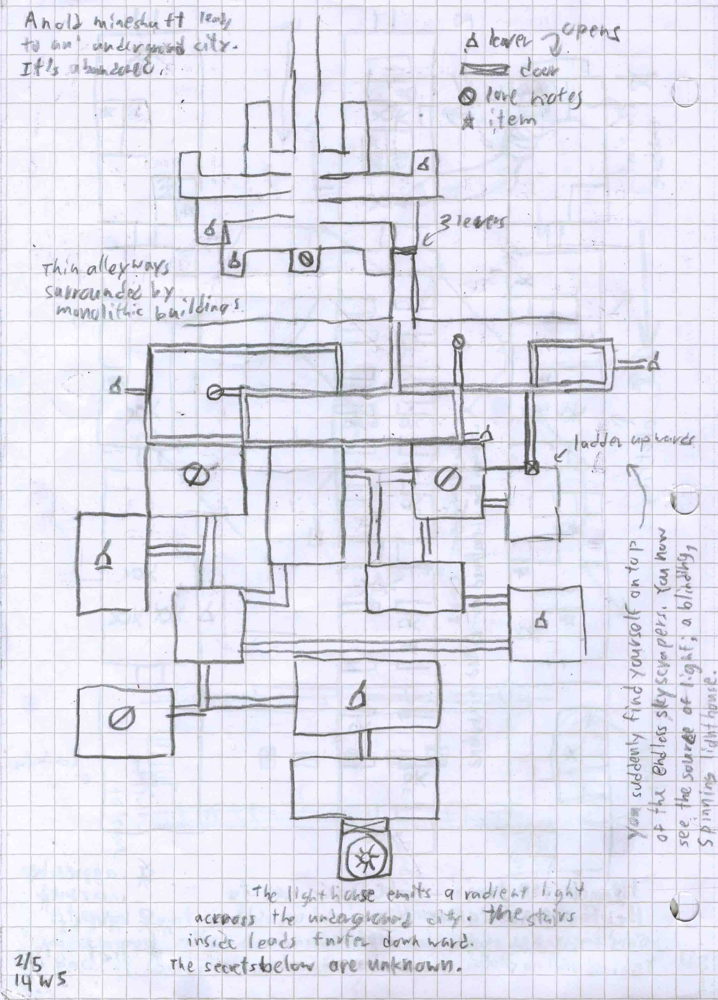
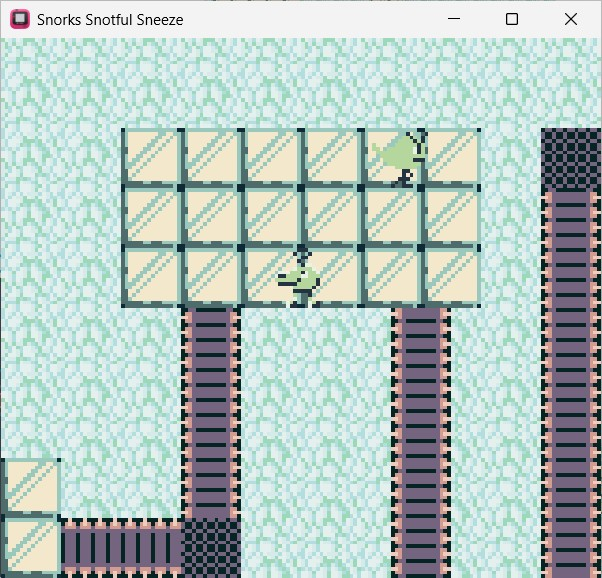
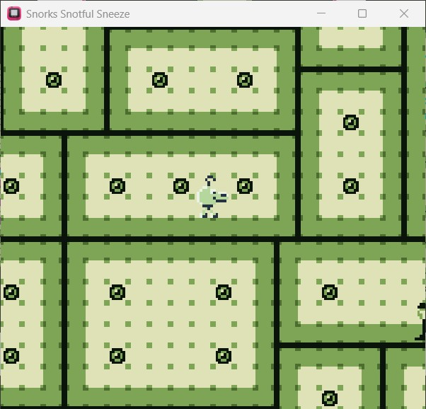
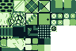

Go Home?
Play Here!
The class that this project was made for had us hand-draw maps 3 times a week, and as the final project, implement some of those maps into GBStudio game. Due to the variety of maps I made and my love for Yume Niiki, I decided to make a surrealist walking simulator (with combat, as required by the assignment).



This simple walking simulator has more happening under the hood than you might think. It has many different triggers to prevent sequence breaking, and some scene-based trickery to exceed the actor limit. For example, I recognized players wouldn't immediately assume that the lampposts could be interacted with, so the first room with a lamppost tells players to interact with it before they leave if they didn't interact with it yet.


Each map was made in Tiled, which were then colored in GBStudio. The tileset I made and used was quite small, but I used a 8px by 8px base with my 16px by 16px blocks, allowing me to use each tile diversely.
